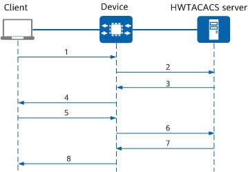

HWTACACS Two-Factor Authentication Process
In HWTACACS two-factor authentication, the HWTACACS server verifies the dynamic verification code received by a user in addition to the user name and password. The following uses an SSH user as an example to describe the HWTACACS two-factor authentication process.
Figure 1 HWTACACS two-factor authentication process
- A user enters a user name and password. The client then sends the user name and password to the device.
- The device sends the user name and password to the HWTACACS server.
- The HWTACACS server verifies the user name and password based on its database and returns the verification result to the device.
- If both the user name and password are correct, the HWTACACS server sends a challenge message to the device to request a dynamic verification code.
- If the user name or password is incorrect, the HWTACACS server sends an authentication failure message to the device.
- The device sends the user name and password verification result to the client.
- If the user name and password are correct, the process of verifying the dynamic verification code starts. The device sends the dynamic verification code to the client.
- If the user name or password is incorrect, the authentication process ends and the user login fails.
- The user enters the dynamic verification code on the client, and the client sends the dynamic verification code to the device.
- The device sends the dynamic verification code to the HWTACACS server.
- The HWTACACS server verifies the dynamic verification code and sends the verification result to the device.
- If the dynamic verification code is correct, the HWTACACS server sends an authentication success message to the device.
- If the dynamic verification code is incorrect, the HWTACACS server sends an authentication failure message to the device.
- The device sends the authentication result to the client.